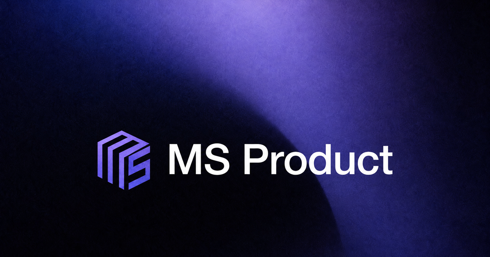
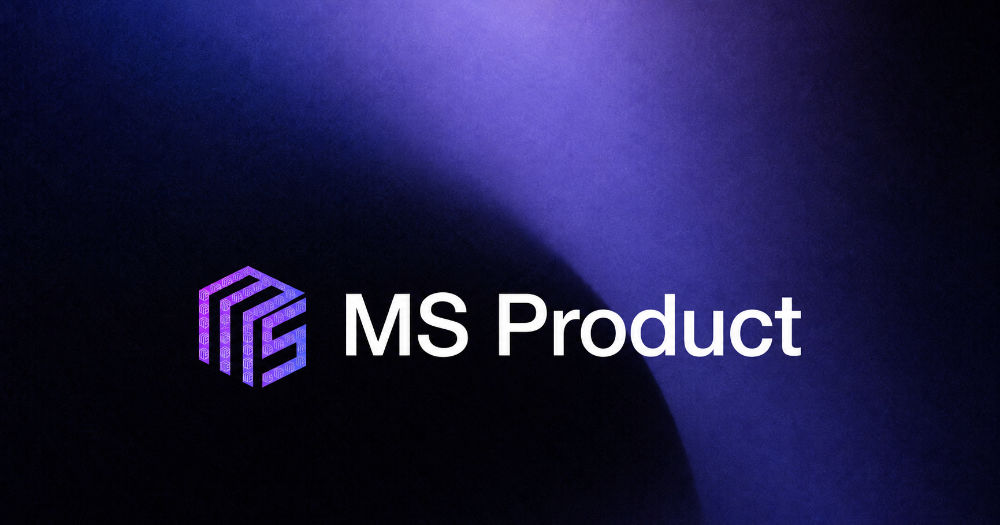
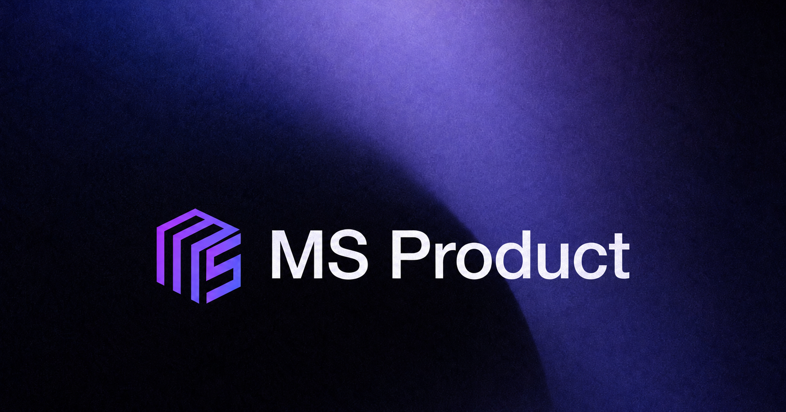
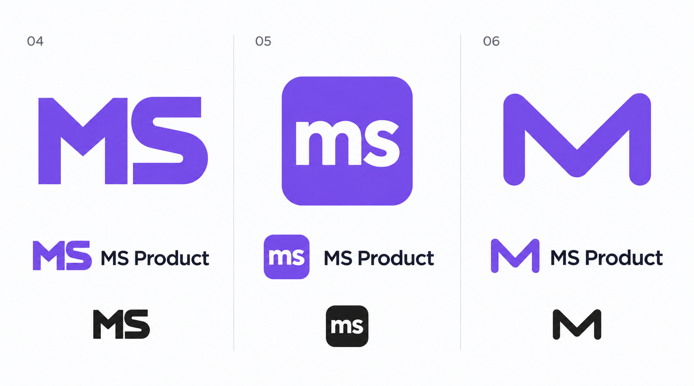
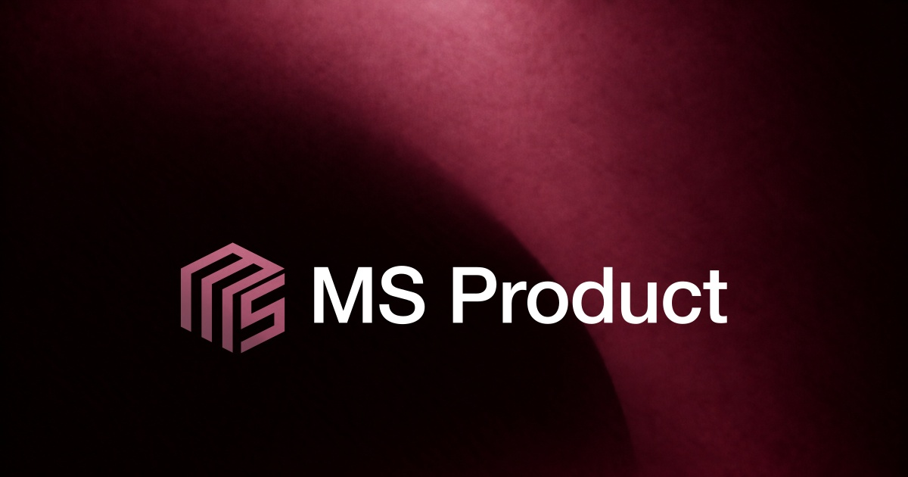
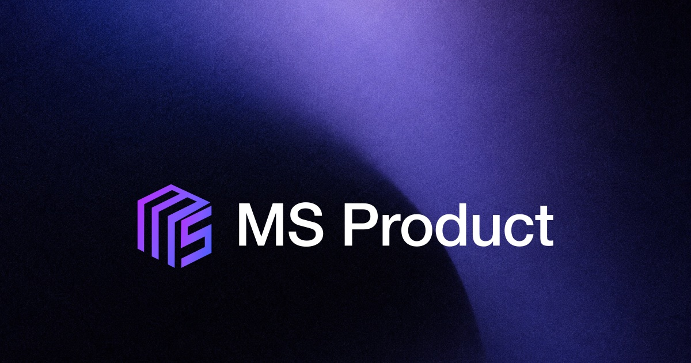
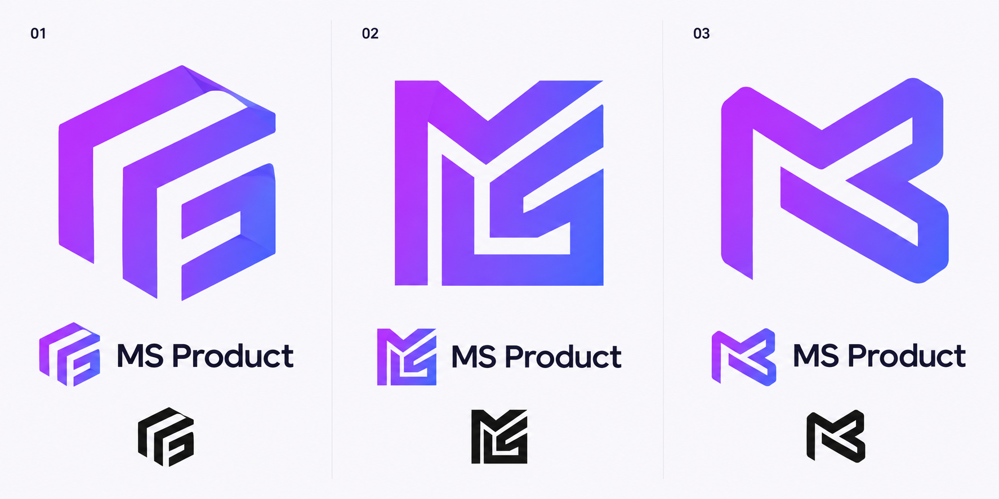

MS Product · Пробы
Основной вариант сохранён. Здесь отдельно сравниваем цвет и новые направления знака.
Фактура фона внутри знака MS

Мягкая мелкая фактура внутри исходного знака. Надпись остаётся гладкой. Растровая проба.
MS внутри MS · микропаттерн

Повторяющиеся миниатюрные знаки внутри цветной монограммы. Надпись MS Product остаётся гладкой. Растровая проба.
Исходный знак · проба текстуры

Мелкое зерно и мягкие вариации тона внутри знака и букв. Растровая проба фактуры; основной комплект сохранён.
Проще · варианты 04–06

04 · Читаемые буквы MS. 05 · Компактная иконка ms. 06 · Одна буква M.
Поисковые эскизы. Основной утверждённый вариант сохранён.
Утверждённый · белый

Проба · фирменный градиент

Новые направления · эскизы

01 · Развитие текущей формы. 02 · Плотная модульная монограмма. 03 · Мягкая лента.
Это поисковые растровые эскизы, не готовые логотипы. Читаемость букв и малые размеры требуют проверки после выбора направления.
Основной комплект · О файлах